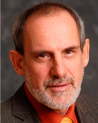

|
Dr. Ángel Óscar Minotti
- Profesor titular de Medicina Homeopática y Director de Patogenesias de la Asociación Médica Homepática Argentina.
- Autor de primer programa computarizado a nivel mundial, en idioma español, del Reparto de Kent, en 1988.
- Autor de los libros "Los Tumores de Mamá", "Los Traumatismos, Heridas y Secuelas" y "Ensayos Filosóficos".
- Autor del método audiovisual para el aprendizaje de la Materia Médica, llamado "Materia Médica Vivencial".
- Imparte Cursos en forma contínua en Brasil, España, Uruguay y Colombia.
|
|
Dr. Gustavo Alberto Cataldi
- Médico egresado de la Facultad de Medicina de la Universodad de Buenos Aires en el años de 1979 con diploma de honor.
- Licenciado Filosofía egresa de la Facultad de Filosofía y Letras de la Universidad de Buenos Aires en el año 2008 con diploma de honor.
- Especialista en Clínica Médica en el Hospital Churruca entre 1980 y 1983.
- Fue médico de Planta en el servicio de Terapia Intensiva del mismo Hospital desde 1983 hasta el año 2000.
- Realizó el Curso de Homeopatía en la Escuela Médica Homeopática Argentina "Tomás Pablo Paschero", finalizándolo en 1988.
- En dicha Institución desarrolló toda su Carrera Docente hasta ser nombrado profesor Titular, cargo que desempeña desde 1999.
- Fue relator en numerosos Congresos de Homeopatía, dictó cursos en países como Cuba, Brasil y Uruguay.
- Autor de numerosos trabajos en Homeopatía publicados en revistas nacionales e internacionales.
- Vicepresidente Nacional por Argentina ante la Liga Médica Homeopática Internacional desde 2009.
- Director de la Escuela Médica Homeopática Argentina "Tomás Pablo Paschero" desde el año 2004 hasta la actualidad.
|
|
Dr. Gustavo Ezequiel Krichesky
- Médico egresado de 1981 de la Universidad de Buenos Aires.
- Egresado de la Escuela Médica Homepática Argentina bajo la dirección del Profesor Tomás Pablo Paschero en 1984.
- Miembro de la Liga Mediocorum Homepathica Intenationalis desde 1984.
- Profesor Adjunto de Materia Médica en 1991.
- Profesor Titular de Materia Médica desde 1993.
- Profesor Titular Plenario de Materia Médica por sociedades Médico Homepáticas de Sudamérica, México y Europa.
- Autor de numerosos trabajos traducidos y publicados en numerosas revistas de Homeopatía en el extranjero.
- Autor del Libro Homeopatía. Estudio comparativo de Medicamentos de la Materia Médica Homeopática, editado por KIER en 2005.
- Autor del libro "Omeopatia Comparata".
- Diagnosi differenziale tra alcuni rimedi della Materia Medica Omeopatia en italiano. Edizioni Salus.
- Autor del libro Homepatía. Materia Médica Comparada, editado por KIER en 2008 -Prologado por el Dr. Zalman J. Bronfman.
- Vicepresidente de la Escuela Médica Homepática Tomás Pablo Paschero (2003-2005). |
|
Dr. Marcus Zulian Teixeira
- Ingeniero Agrónomo egresado de la Escuela Superior de Agricultura Luis de Queiroz (ESALQ-USP) en 1981.
- Médico egresado de la Facultad de Medicina de la Universidad de Sao Paulo (FMUSP) en 1991.
- Lato Sensu Graduado en Homeopatía (1994) por la Asociación Paulista de Homeopatía (APH).
- Título de Especialista en Homeopatía (1996) emitido por la Asociación Médica Homeopática Brasileña (AMHB).
- Doctor en Ciencias Médicas (PhD, 2009), Facultad de Medicina de la Universidad de Sao Paulo (FMUSO).
- Profesor y coordinador del curso "Fundamentos de la Homeopatía" desde 2003, Facultad de Medicina de la Universidad de Sao Paulo (FMUSP).
|
|  |
Prof. Dr. Martin Dinges
- Director Delegado del Instituto para la Historia de la Medicina de la Fundación Robert Bosch, Stuttgart, Alemania y Profesor Adjunto de Historia Moderna en la Universidad de Mannheim, Stuttgart, Alemania.
- Sus temas principales de investigación son los relacionados con la Historia Moderna de la Salud y la Historia de Género.
- Estudió Leyes, Historia y Ciencias Políticas en las Universidades de Colonia, Maguncia, Bonn, Berlín y Bordeaux.
- Doctor en Ciencias por la Universidad Libre de Berlín en 1986 con la Tesis "Stadtarmut in Bordeaux" (1525-1675), Alltag, Politil, Mentalitäten, Bonn 1988.
- Maestría de Grado en Marburg, 1991 (acreditado como archivista de estado).
- Habilitación por la Universidad de Mannheim, 1992 por su libro "Der Maurermeister und der Finanzrichter. Ehre, Geld und soziale Kontrolle im Paris des 18", Jahrhunderts, Göttingen 1994.
- Nombramiento como Profesor Adjunto en la Universidad de Mannheim en 2000.
- Nombramiento como Profesir Honorario del INstituto de Ciencias Médico Homeopáticas "Pandit Jawaharlal Nehru Memorial" de Amravati, India en 2006.
Publicaciones:
* "La transmisión de prácticas de Salud" (c. 1500 a 2000), Stuttgart 2011 (ed. con Robert JÜtte)
* "La Salud y el Cuidado de la Salud entre las Organizaciones Intermediarias de Auto-ayuda y Ayuda asistencial a los necesitados" (1500-2005). Procedimientos de la conferencia de la Red Temática Europea de Políticas de Salud y Asistencia Social en Braga, Portugal, 2004, Evora 2007 (ed.)
* "Samuel Hahnemann und sein Umfeld. Quellen aus der Sammlung der Deutschen Homöopathie-Union", editado por H. Talkenberger (Stuttgart 2005) (ed. con R. Jütte)
* "Los pacientes en la Historia de la Homeopatía" (Sheffield, 2002)(ed.)
* "Weltgeschichte der Homöopathie", Länder - Schulen - Heilkindige (Munich, 1996)(ed.)
* "Homöoplathie. Patienten, Heilkundige und Institutionen". Von den Anfägen bis heute Heidelberg, 1996) (ed.)
* "Medizinkristische Bewegungen im Deutschen Reich" (ca. 1870 - ca. 1933) (Stuttgart, 1996) (ed.) |